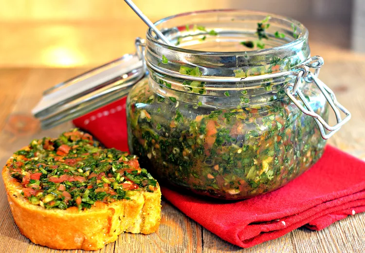

Pebre is a Chilean salsa and is most commonly used on bread. It is also used on meats or anything else you desire. My favorite way to use it is on barbecued tri-tip. You can vary the ingredients to suit your taste.
Combine tomatoes, cilantro, scallions, garlic, red wine vinegar, chile-garlic sauce, olive oil, and garlic salt in a food processor or blender; process to the desired consistency. Refrigerate for 2 hours to let the flavors blend.
23
1g
3g
1g